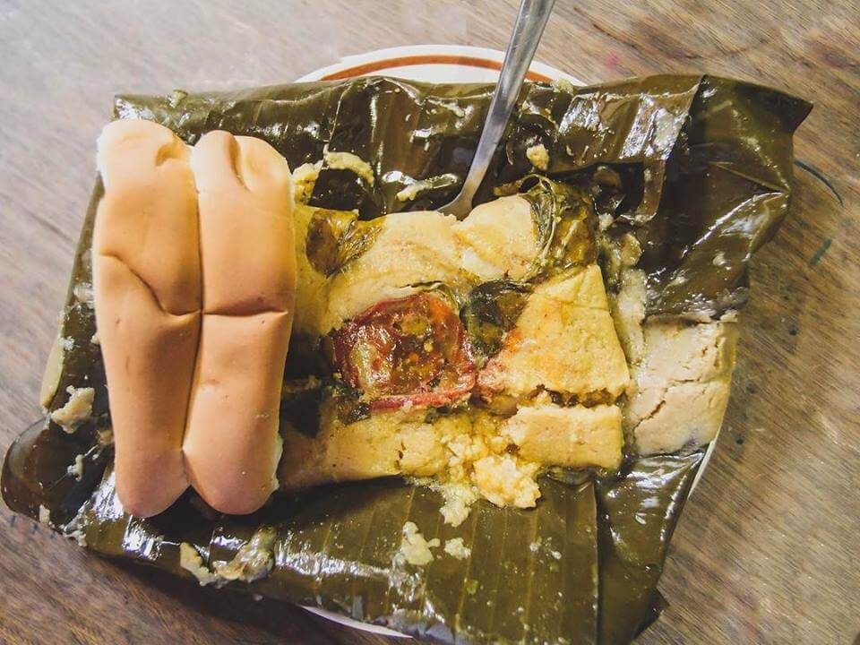

Nacatamales

A great example of Nicaraguan popular gastronomy
A nacatamal is a traditional dish found in Nicaragua similar to the tamal and to the hallaca. Its name originates from the Nawat language spoken by the Nicarao, which were situated on the Southern Pacific coast of Nicaragua, and translates to "meat tamale"
Ingredients
- Corn dough.
- Onion.
- Green chili
- Tomatoes
- Garlic
- Pork or chichen
- salt
- Platano leaves to tie
Steps
- First prepare the meat for the filling. The rib meat and pork jowl should be cooked in a covered pot over low heat with the tomatoes, onion, bell pepper, garlic, dissolved achiote, bitter orange juice, salt and pepper.
- Add 1/2 or one full cup of water if necessary, and when the meat is tender, adjust the seasoning as desired. Remove from heat and let cool; the meat should be juicy and well seasoned.
- To prepare the dough, place the corn flour in a bowl. Add the lukewarm water, bitter orange juice and knead constantly. Slowly incorporate the melted pork drippings and salt. The dough should be very smooth and similar in texture to play-dough. If the result is too dry, add a bit of water. Remember that as the dough rests, it will become more firm. When this happens, place in a pot over medium-heat and stir with a wooden spoon for around 40 minutes.
- Have the banana leaves ready for assembling the nacatamales. Take two leaves and place in the form of a cross. Place a 3/4-cup portion of dough in the center, where the leaves overlap, and slightly flatten with your hand. Over the dough, add a piece of pork meat and two cubes of pork jowl. Cover with one tablespoon of sauce left from cooking the pork.
- Have the banana leaves ready for assembling the nacatamales. Take two leaves and place in the form of a cross. Place a 3/4-cup portion of dough in the center, where the leaves overlap, and slightly flatten with your hand. Over the dough, add a piece of pork meat and two cubes of pork jowl. Cover with one tablespoon of sauce left from cooking the pork.
- To the other side of the dough, add an olive, one prune, two raisins, one peanut, two capers and two habanero peppers (one red and one green.)
- Close the tamale as if it was an empanada, securing the contents well with the banana leaves, so that none of the filling falls out. Tie the nacatamales with twine to keep closed.
- To cook, cover the base of a large pot with a rack and place the leftover banana leaf scraps on top. Then add the prepared nacatamales followed by more banana leaves. Add enough boiling water to fill half of the pot
- Cover the pot with a lid and cook over medium heat to steam the tamales for three to four hours. Remember that you’ll have to add more hot water over time, as it boils away.
- hen finished, serve hot accompanied with pita bread